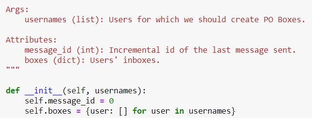

לגבי משתני מחלקה, אני פשוט מתעד אותם רגיל כמו כל Attribute? נגיד בתור האחרונים ארשום “BOTTOM_BOUND (int): whatever” ?
ושאלה בנוגע ל-Sphinx Docstrings במחברת 2:
מה שקראנו להם Parameters לפי גוגל וNumPy עכשיו נקרא ivar, ומה שקראנו לו attribute פה נקרה param.
ניסיתי קצת לקרוא על זה יותר כי סה"כ אישית יותר קל לי לקרוא את הספינקס כי הוא קצר וקולע במראה שלו, אבל בגלל שלא הבנתי מתי לכתוב מה את התרגילים הגשתי בסגנון גוגל כי הוא השני בנוחות מבחינתי.
העניין הוא שככה זה היה רק בתחילת המחלקה וה-init. אבל בהמשך בהתייחסות לפונקציה פתאום כתוב על האיברים שהתקבלו בפרמטרים param (סה"כ הגיוני) אבל למה מקודם אז התייחסנו לattributes בתור param?
aviadamar
הבחירה במה לתעד היא שלנו אם הספינקס נוח לך יותר לך על זה.
בנוגע למשתני מחלקה - אני לא יודע אבל ממה שקראתי מתעדים אותם באטריביוטס.
Yam
איבדתי אותך. תוכל להסביר בקצרה מה ראית במקום א’, מה הוא מקום א’, מה ראית במקום ב’ ומה הוא מקום ב’?
orirenick
אנסה קצת יותר מובן עם תמונות (מקווה שיהיה מובן עכשיו):
נתחיל עם google docstrings

כותרת Args ניתנת למה שהתקבל בתור ארגומנט באתחול (וגם בכל פונקציה)
ולתכונות של המחלקה נתנו את הכותרת Attribute
(לעומת זה NumPy Docstring פשוט שינה את המילה Args אל Parameters, אבל סהכ נשאר בדיוק אותו דבר)
פה פתאום לארגומנט שהתקבל באתחול ניתן הכותרת ivar ולתכונות קראנו param
אבל בפונקציה בהמשך קראנו לארגומנטים שהתקבלו גם param.
כלומר בgoogle/numpy יש ממש הפרדה בין ארגומנטים שמתקבלים, לבין התכונות של המחלקה
לעומת זה בספינקס נראה שאין הפרדה לפי ה"כותרת" מה הסוג של הפרמטר האם הוא תכונה או ארגומנט, וגם מה זה ה-ivar שניתן לארגומנט באתחול?
לייק 1
Yam
למען האמת זו פשוט טעות, תודה שמצאת – אצרף לתיקונים
ivar הוא instance variable, משמע שב־Sphinx ה־ivar אמור להיות message_id ו־boxes
מצרף פה את התיעוד הנכון:
:ivar int message_id: Incremental id of the last message sent.
:ivar dict boxes: Users' inboxes.
:param list usernames: Users for which we should create PO Boxes.
orirenick
מעולה, אז אולי כן אתחיל לכתוב עם ספינקס
אם כבר אז כבר, לכאורה צריך להיות :param list of str usernames: לא?
בגוגל זה ברור יותר ברשימות כי זה בסוגריים, פה זה טיפה נראה מבלבל
וגם, אחד מהבעיות שלא הצלחתי להבין כשחיפשתי מה זה ivar, נתקלתי בCvar/Var מה הם?
cvar זה משתנים כמו MAX_BOUNDRY שאני יכול להגדיר במקום לכתוב מספר כל פעם?
Yam
קצת גוגל, אתה תמצא את זה.
אם אתה רוצה לתת יותר ממילה אחת ב־Sphinx בתיעוד ה־type אתה צריך שורה נפרדת ל־type
כן, cvar אלו משתנים ששייכים למחלקה ולא למופע.
var זה כשאתה לא מעוניין להיות ספציפי בנוגע לזה
orirenick
:param usernames:
:type usernames: list of str
Rach
ומה התשובה על משתני המחלקה - מתועדים כ-attributes או לא?


{kind=link}